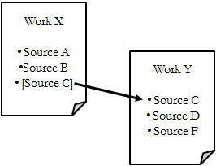
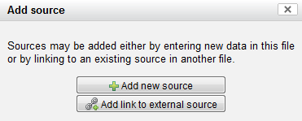
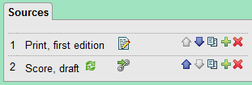

Using external sources – linking to and copying from sources in other files
Referring to source descriptions in other files
A source shared by a number of files does not have to be described in each file, duplicating the information about it. Instead, the source description in one file may be retrieved by other files.

In the above example, the works X and Y, located in separate
files, are sharing the source C. Work X, however, only has a
placeholder for the source C, retrieving the actual source description
from work Y.
Assuming that you already have the source description you want to link
to (i.e. work Y in the example above), follow these steps to indicate
that source information for work X is to be retrieved from an external
file:
- Create or open for editing the work that will be using the external source (i.e. work X in the example)
- At the Source
tab, create a new source by clicking an existing source's
 add button (if
there are no sources defined yet, you will need to create a regular
source first, as external source linking is - for now - available only
from add buttons next to an existing source; this has purely technical
reasons. Once you have created the external source link, you may delete
the empty source created first).
add button (if
there are no sources defined yet, you will need to create a regular
source first, as external source linking is - for now - available only
from add buttons next to an existing source; this has purely technical
reasons. Once you have created the external source link, you may delete
the empty source created first). - From the menu, choose "Add link to external source"
 - This opens the source browser. It lists all works having sources. You may limit the number of works displayed by selecting a specific file collection (series) or enter search terms such as the title. Please note that the file browser may need some time to load and to update.
- Click the work that has the desired source description to
show a list of its sources.

- Click the source you want to link to. This will close the
source browser. In the list of sources, you will see a "Go to linked
resource" icon
 on the source, indicating that
this is a reference to a source description kept in an external file.
Clicking it will close the file you are working on and open the file
containing the link target for editing instead. A warning is displayed
to remind you that you are about to open another file.
on the source, indicating that
this is a reference to a source description kept in an external file.
Clicking it will close the file you are working on and open the file
containing the link target for editing instead. A warning is displayed
to remind you that you are about to open another file.

When creating a reference to an external source, a copy of the source's title is placed in your file for your information. This title does not update automatically if you change the source title in the linked file. Therefore, an update button is provided next to the source link's title to
let you update the title if necessary.
is provided next to the source link's title to
let you update the title if necessary. - In the HTML preview, an external source will be displayed exactly as if the source description had been entered in the file itself.
- Be aware that files using references to external sources are not entirely self-contained, i.e. the source information in your file is dependent on having to access the referenced file, and the application using the file must be capable of handling this reference in order to retrieve all source information.
Copying source descriptions from another file
Instead of referring to a source description contained in another file, you may want to copy the external source description into the current file. This is convenient if you need to change something in the source description in order to adapt it to the current file.
To copy a source, simply choose "Copy from external source" instead of "Add link to external source" from the source adding menu. This places an independent copy of the external source description in your current file, which can be freely edited.